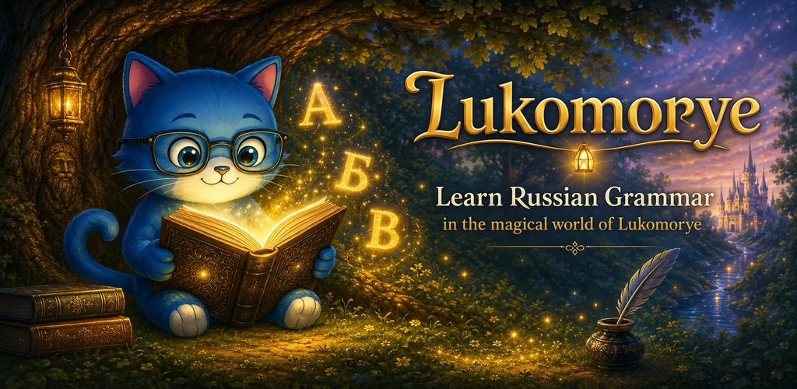

Alphabet und erste Wörter
Lerne das kyrillische Alphabet kennen, höre die aufgenommene Aussprache und entdecke nützliche russische Wörter.
Hilfe, Fehlermeldungen und Ideen: grammilla.academy@gmail.com
Grammilla verbindet Erklärungen, Vokabeln, Audio und Übungen in einer App zum Russischlernen — von den ersten kyrillischen Buchstaben bis zu Fällen und Verben.
Folge den geführten Lektionen und entdecke eine Lernwelt, die von Lukomorye, russischer Literatur und Folklore inspiriert ist.
Für iPhone, iPad und Android.

Beginne mit den Grundlagen oder vertiefe ein bekanntes Thema. Verbinde jede Erklärung mit Beispielen und Übungen.
Lerne das kyrillische Alphabet kennen, höre die aufgenommene Aussprache und entdecke nützliche russische Wörter.
Erarbeite russische Fälle, Verben und Satzmuster mit Erklärungen und Beispielen in deinem eigenen Tempo.
Übe mit Quizfragen und Vokabeltraining, wiederhole gelernte Themen und verfolge deinen Lernfortschritt.
Echte Screenshots der App auf iPad und Android. Öffne ein Bild, um es in voller Größe anzusehen.
Die Screenshots und die Lukomorye-Illustration zeigen englischen Text. In der App kannst du Englisch, Italienisch oder Russisch wählen; das Aussehen kann je nach Version abweichen.


Zwei Themen aus Grammilla: Bewegungsverben ohne Präfixe und der Unterschied zwischen imperfektivem und perfektivem Aspekt.
идти — ходить · ехать — ездить
Im Russischen unterscheidest du Bewegung zu Fuß von Bewegung mit einem Verkehrsmittel. Auch die Richtung und die Regelmäßigkeit einer Bewegung spielen eine Rolle.
Zu Fuß / mit einem Verkehrsmittel
Я сейчас иду в супермаркет. А ты? (Ich gehe gerade zum Supermarkt. Und du?)
А я сейчас еду на автобусе в центр. (Und ich fahre gerade mit dem Bus ins Zentrum.)
Идти / ехать sind unidirektional und beschreiben etwa eine Bewegung in eine Richtung zu einem bestimmten Zeitpunkt. Ходить / ездить sind multidirektional und können regelmäßige oder wiederholte Wege beschreiben.
Alle vier Verben sind imperfektiv. Die Richtungsunterscheidung ist etwas anderes als der Unterschied zwischen imperfektivem und perfektivem Aspekt.
НСВ / СВ · Vorgang / Ergebnis
Die Wahl des Aspekts hängt vom Kontext und deiner Aussageabsicht ab. Vergleiche diese Beispiele aus der Lektion über den Infinitiv:
Imperfektiv — der Vorgang steht im Mittelpunkt
Я хочу говорить по-русски. (Ich möchte Russisch sprechen.)
Perfektiv — das Ergebnis steht im Mittelpunkt
Я хочу сказать тебе правду. (Ich möchte dir die Wahrheit sagen.)
Vorgang / Ergebnis ist ein Einstieg, keine vollständige Regel. Die App behandelt auch andere Verwendungen, etwa perfektive Verben mit по- für eine Handlung, die eine Zeit lang ausgeführt wird.
Kurze Beispiele nach den Grammilla-Lektionen über Bewegungsverben und Verbaspekt. Die vollständigen Erklärungen und Übungen findest du in der App.
Russ with Love
Russischlehrerin und Muttersprachlerin · Mitgestalterin von Grammilla
Lerne eine der Personen hinter Grammilla kennen. Entdecke russische Grammatik, Redewendungen für den Alltag und TORFL-Vorbereitung mit Liuba — und bleib auch außerhalb der App am Russischen dran.
Alle Links öffnen sich in einem neuen Tab.
Derzeit sind die App-Oberfläche und die Erklärungen auf Englisch, Italienisch und Russisch verfügbar. Deutsch ist nur eine Sprache dieser Website.
Ja. Beginne mit dem russischen Alphabet, der Aussprache und den ersten Wörtern und gehe dann zu Grammatik und praktischen Themen über.
Ja. Grammilla bietet Lektionen zu Bewegungsverben ohne Präfixe sowie zum imperfektiven und perfektiven Aspekt.
Grammatik- und Wortschatzübungen können deine Vorbereitung ergänzen. Nutze auch die Prüfungsanforderungen und weitere Lernmaterialien für dein Niveau.
Du kannst als Gast beginnen. Melde dich an, wenn du deinen Fortschritt mit deinem Konto synchronisieren möchtest.
Über die Links zum App Store und zu Google Play oben auf dieser Seite.